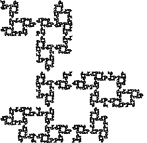
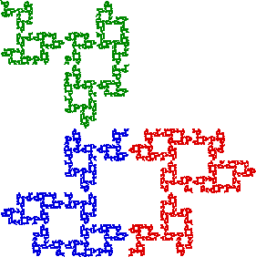

|  |  |
This fractal is a Cantor set.
First, it is completely disconnected: there is no point of contact between the red and the blue pieces, between the red and the green pieces, or between the green and the blue pieces.
Self-similarity carries this disconnection to all levels.
Second, no point of the fractal is isolated.
Again, this follows from self-similarity: every neighborhood of every point of the fractal contains a complete (perhaps tiny) copy of the whole fractal.
Return to Gasket Relatives.